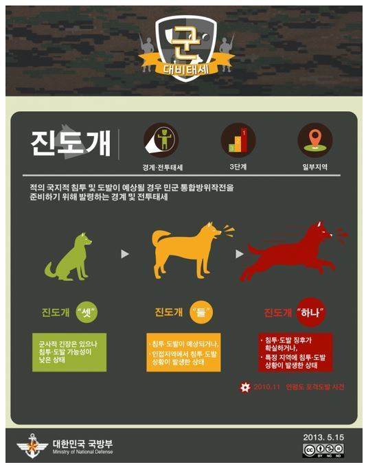

전 시 상 황
공동 행동 요령
- 집밖으로 나오지 말고 방송을 계속 들으면서 정부의 안내를 믿고 따라야 한다.
- 무작정 피난에 나서거나 식량 · 연료 등 생활필수품의 사재기를 해서는 안 되며, 정부가 배급제를 실시 할 경우 적극 협조해야 한다.
- 적의 거짓선전에 속아 동요하는 일이 없도록 하고, 적에게 도움을 주는 행위를 해서는 안 된다.
- 군사작전 등을 돕기 위한 필요차량을 제외한 모든 차량에 대하여 운행이 제한되므로 대중교통수단을 이용해야 하며, 개인용 유·무선 전화기는 꼭 필요한 때 외에는 사용을 자제해야 한다.
- 평소, 가정과 직장주변의 대피소나 비상급수원을 확인해 두고, 적의 공습 등이 예상될 때는 지하 대피소로 신속히 대피해야 한다.
《경계경보》 적의 공격이 예상될 때
사이렌으로 1분 동안 평탄음이 울리고, 라디오 · TV · 확성기 등으로도 경보방송을 한다.
- 어린이와 노약자를 미리 대피시키고 평소 준비해 둔 비상용품은 대피소로 옮겨야 한다.
- 화재위험이 있는 유류와 가스통 등은 안전한 곳 으로 옮기고, 외부 가스 밸브를 차단하며 전열기의 코드를 뽑아야 한다.
- 화생방 공격에 대비하여 방독면 등 개인보호 장비를 점검하고, 음식물과 우물 등은 뚜껑이나 비닐로 덮어야 한다.
- 극장·운동장·백화점 등 사람이 많이 모이는 곳에서는 영업을 중단하고 손님들에게 경보 내용을 알린 뒤 대피 준비를 하도록 해야 한다.
《공습경보》 적의 공격이 긴박하거나 공습 중일 때
사이렌으로 3분 동안 파상음이 울리고, 라디오 · TV · 확성기 등으로도 경보방송을 한다.
- 화생방 공격에 대비한 방독면 등 개인보호 장비와 간단한 생필품·물자 등을 가지고 대피해야 한다.
- 지하 대피소 등 안전한 곳으로 빨리 대피하고, 고층 건물에서는 지하실 또는 아래층으로 대피하여야 한다.
- 운행 중인 차량은 가까운 빈터나 도로 오른쪽에 세우고 승객을 모두 내리게 하여 지하대피소 (지하시설)로 대피토록 해야 한다.
- 대피한 뒤에도 계속 방송을 들으면서 정부의 안내에 따라 행동해야 한다.
가정내 평시 비상대비 물품
-
비상용 생활필수품
- 식량 : 가급적 조리와 보관이 간편한 쌀, 라면, 밀가루 등(15일 - 1개월분)
- 취사도구 : 식기(코펠), 버너 및 부탄가스(15개 이상)
- 침구 및 의류 : 담요, 내의 등
- 라디오(배터리 포함), 배낭, 휴대용 전등, 양초, 성냥 등
-
가정용 비상약품
- 의약품 : 소독제, 해열진통제, 소화제, 지사제, 화상연고, 지혈제, 소염제 등
- 의약외품 : 핀셋, 가위, 붕대, 탈지면, 반창고, 삼각건 등
-
화생방전 대비물품
- 방독면 또는 수건, 마스크
- 보호옷 또는 비닐옷, 우의
- 해독제, 피부제독제 또는 비누, 합성세제
- 방독장화와 장갑 또는 고무장화와 장갑
- 충분한 접착테이프(창틀, 문틀 밀폐용)
각종 행동요령
.jpg)
.jpg)
.jpg)
.jpg)
.jpg)
.jpg)
.jpg)
개념

진도개

진도개는 총 3단계 국군방어준비태세로서, 발령주체는 연대장 이상 지휘관이다. 3단계에서 1단계로 갈수록 높은 수준의 심각성을 갖는다. 국지적 도발, 적 부대 침투, 탈영병 발생시 발령된다.
- 진도개 셋: 평시 상태이며, 지금도 발령 상태이다.
- 진도개 둘: 북한 무장 간첩의 침공이 예상되거나 군부대 내 탈영이 발생할 때 발령된다.
-
진도개 하나: 최고 비상 경계 태세로 군, 경찰, 예비군이 최우선으로 지정 지역에 출동한다.
- 1996년 9월 강릉무장공비 침투사건
- 2004년 11월 철원 DMZ 철책 절단 흔적 발견
- 2014년 6월 제22보병사단 총기난사 사건
- 2014년 10월 연천 대부건단 발원지 격파사건
- 2015년 8월 서부전선 포격 사건
데프콘
.jpg)
데프콘은 총 5단계 전투준비태세로서, 발령주체는 한미 대통령이다. 5단계에서 1단계로 갈수록 높은 수준의 심각성을 갖는다. 전시상황에 대비해 발령한다.
- 데프콘 5단계: 전쟁 위험이 없는 상태이다.
- 데프콘 4단계: 전쟁 가능성이 존재하는 상태이다. 대한민국은 1950년 6.25 전쟁 이후에 1953년부터 지금까지 데프콘 4단계 상태이다.
- 데프콘 3단계: 큰 악영향이 감지되거나 큰 긴장상태가 전개되어 군사 개입 가능성이 있는 경우 발생한다. 국내에서는 1976년 8월 판문점 도끼 사건, 1983년 아웅산 묘역 폭탄테러사건에 데프콘 3단계가 발령되었다.
- 데프콘 2단계: 적이 공격태세를 강화하거나 공격 증후 포착시 발령된다.
- 데프콘 1단계: 전쟁에 임박하여 전시 상태 돌입 전 발생한다.
워치콘
.jpg)
워치콘은 총 5단계 정보감시태세로서, 발령주체는 한미연합사령관이다. 기본적으로 5단계에서 1단계로 갈수록 높은 수준의 심각성을 갖는다. 정보감시, 첩보 체계로 데프콘이 내려진 근거로 적의 동향이나 움직임을 감시한다.
- 워치콘 5단계: 전쟁이 끝난 상태이다.
- 워치콘 4단계: 한국군의 평시 상태로 북한군의 배치나 움직임을 감지한다.
- 워치콘 3단계: 북한의 군 배치가 평범하지 않거나 국내에 위협이 될 것 같은 경우 발령한다. 워치콘 3은 최근 2011년 12월 김정일 사망, 2015년 8월 21일 서부전선 포격 사건에 발령되었다.
-
워치콘 2단계: 워치콘 3을 포함하며, 북한군의 움직임이 매우 활발할 경우 또는 이로인해 국내에 큰 긴장감이 발생할 경우이다.
- 2006년 10월 북한 1차 핵실험
- 2009년 5월 북한 2차 핵실험
- 2010년 5월 천안함 사건
- 2010년 10월 연평도 포격사건
- 2013년 2월 북한 3차 핵실험
- 2015년 8월 서부전선 포격사건
- 워치콘 1단계: 북한군이 전쟁을 작정하고 움직임이 포착됐을 때 발령한다.
인포콘
.jpg)
인포콘은 총 5단계 정보작전방호태세로서, 발령주체는 합참의장이다. 5단계에서 1단계로 갈수록 높은 수준의 심각성을 갖는다.
- 인포콘 5단계: 일상적 상황
- 인포콘 4단계: 일반적인 위협 경보 포착시
- 인포콘 3단계: 특정한 공격 징후 포착시
- 인포콘 2단계: 제한적 공격상황 발생시
- 인포콘 1단계: 전면적인 공격시